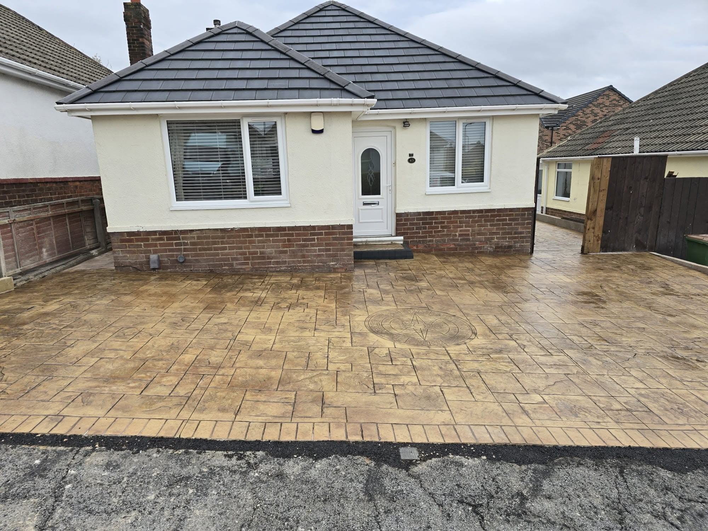
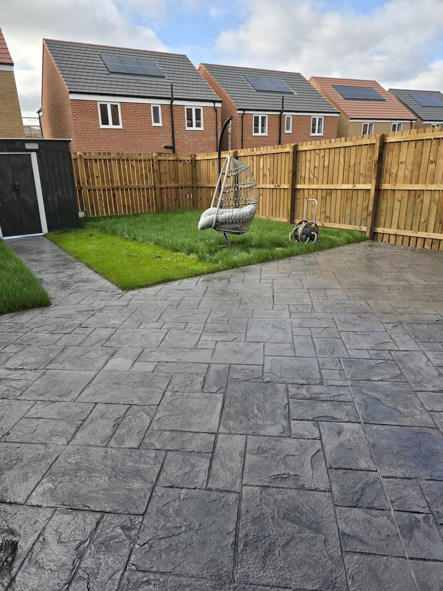
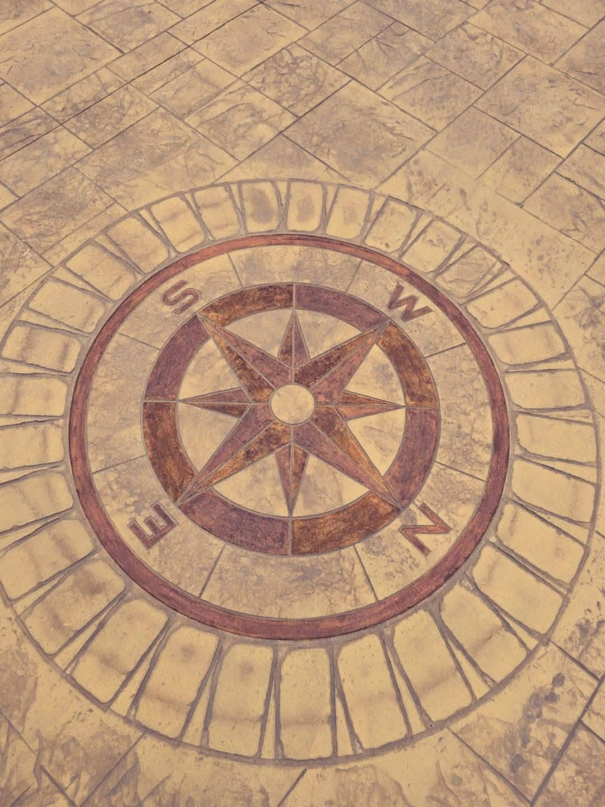
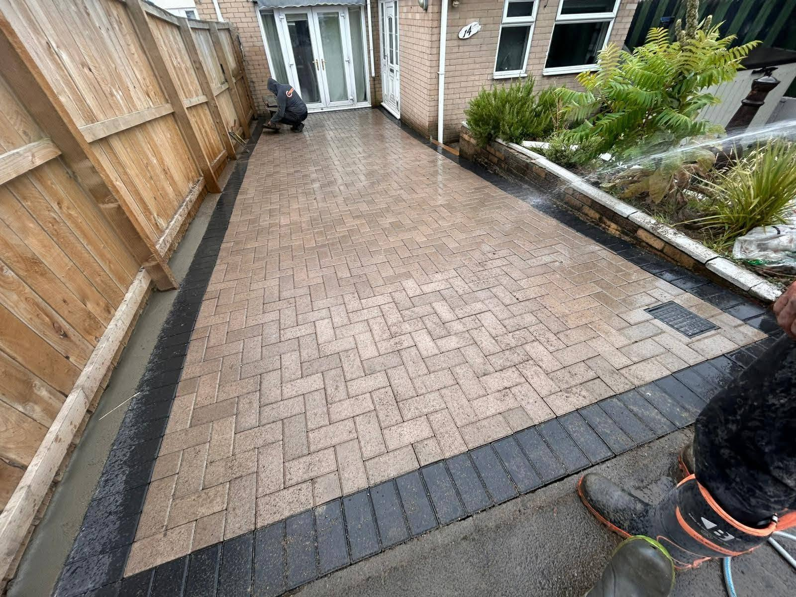
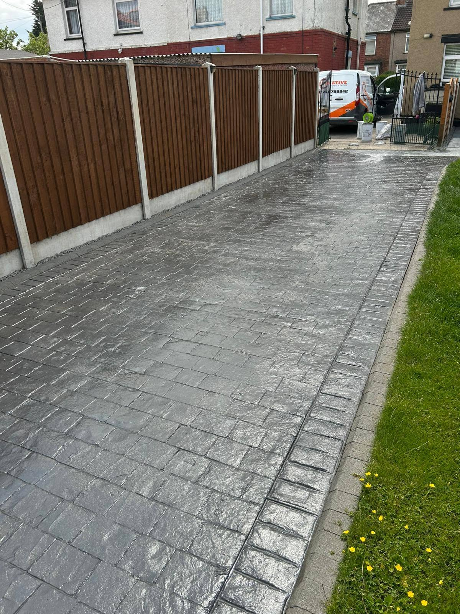
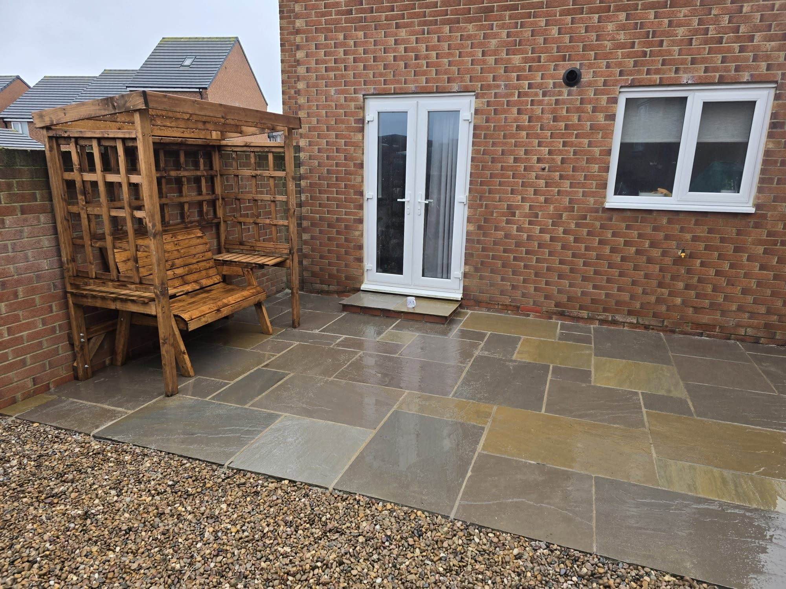
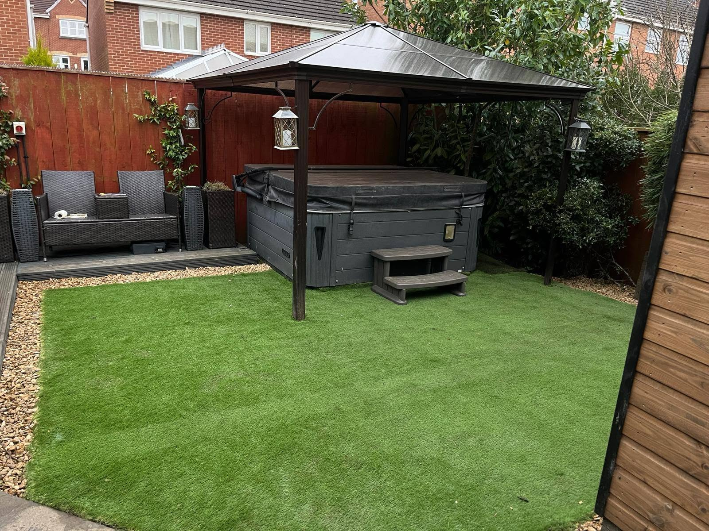
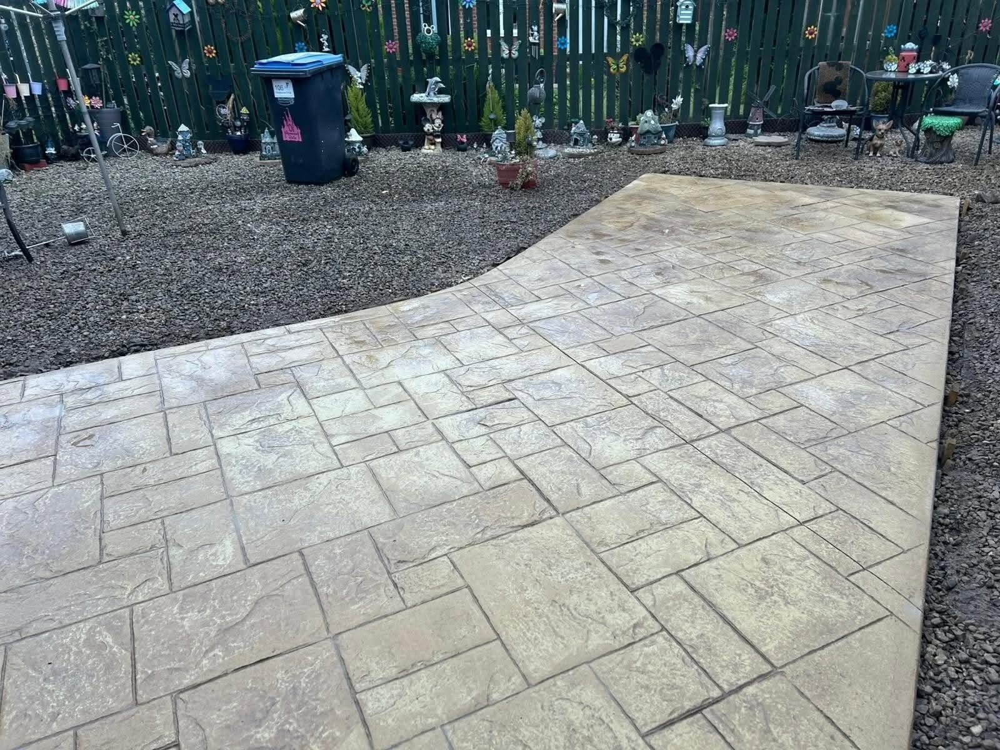
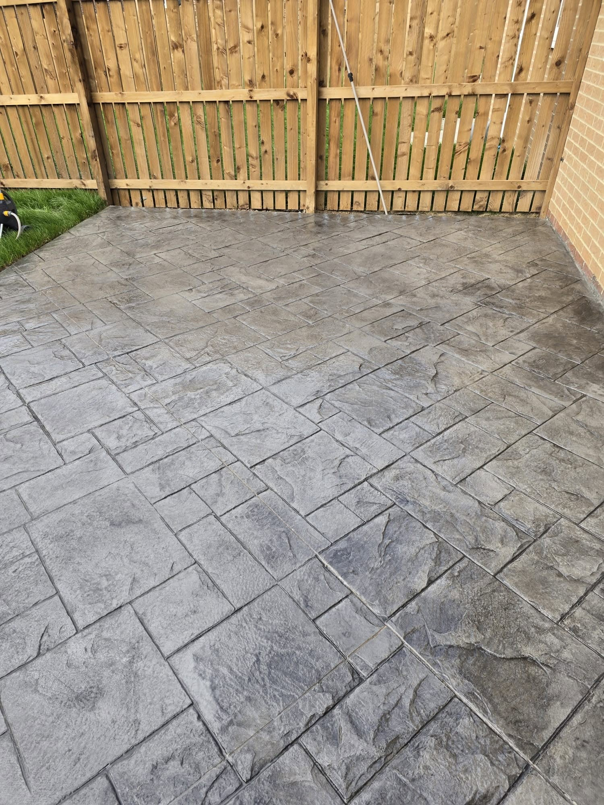
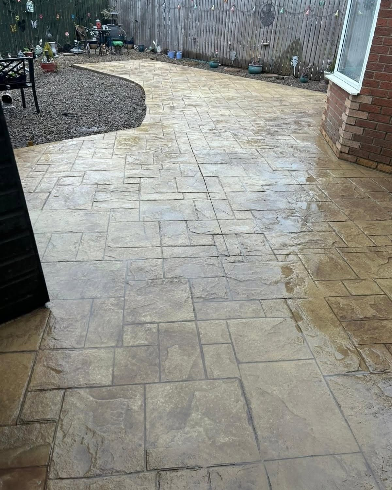

Imprinted concretePatterns and finishes with character

CREATIVE CONCRETE & PAVING
If you see usabout,give us a shout!
Distinctive imprinted concrete, driveways and patios built for everyday use.
Imprinted concreteDrivewaysPatios & paving
DrivewaysA smart entrance made for use
PatiosOutdoor space to enjoy
Block pavingClean lines and lasting appeal
CREATIVE SURFACES
Concrete with a different finish.
The supplied work shows imprinted concrete in a range of patterns and colours, alongside block paving and stone patios. A carefully selected surface can change how the whole outside space feels.
See recent work →

DRIVEWAYS & ENTRANCES
Make the approach count.
From a patterned concrete finish to carefully laid blocks and contrasting borders, these projects show how much a driveway changes the first impression of a home.
Discuss your driveway →
REAL CREATIVE PROJECTS
See the finish up close.
Driveways, patios and outdoor spaces from the supplied project photographs.






SEE US AT WORK
From groundwork to finished surface.
Watch the work in progress and the detail of a completed imprinted concrete area.
01 / PREPARATION
Groundwork in progress
Preparing the area before the new surface takes shape.
02 / FINISH
See the pattern close up
A walkthrough of the finished imprinted surface.
BUILT TO IMPRESS. BUILT TO LAST.
Find the right finish for your space.
The company flyer highlights imprinted concrete in ashlar, cobble, block and other patterns, with free no-obligation quotes. Speak directly about your project and the finish you want.
01
Patterns & colours
Choose a look to suit the property.
02
Careful installation
Groundwork and finishing details matter.
03
Easy contact
Call or message with the job details.
FREE NO-OBLIGATION QUOTE
Tell us about the job.
Fill in your details and WhatsApp opens with your request ready to send.
Prefer a call? 07764 756842
CREATIVE CONCRETE & PAVING
See us about? Give us a shout.
Ask for a free no-obligation quote.